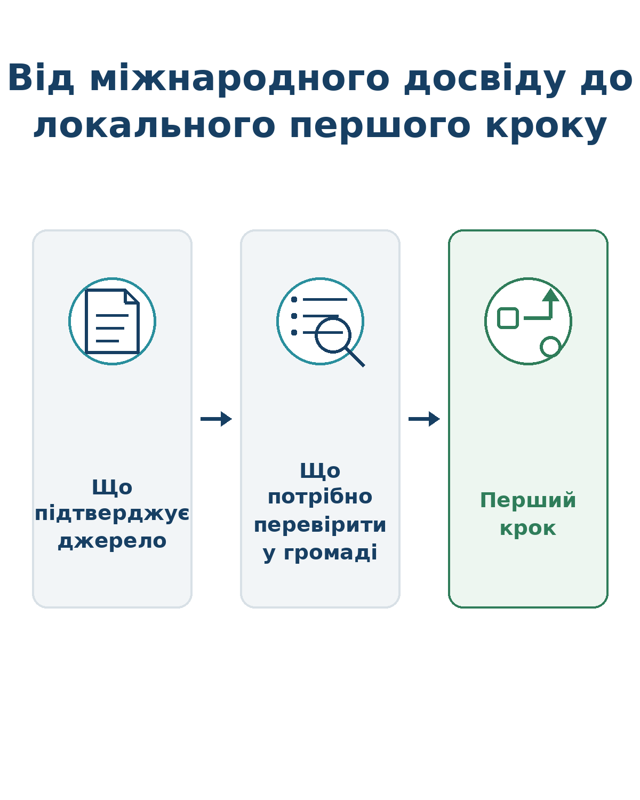
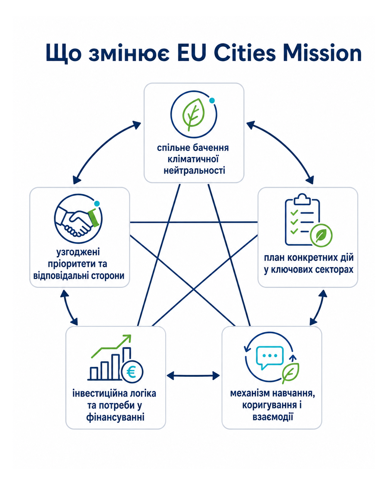
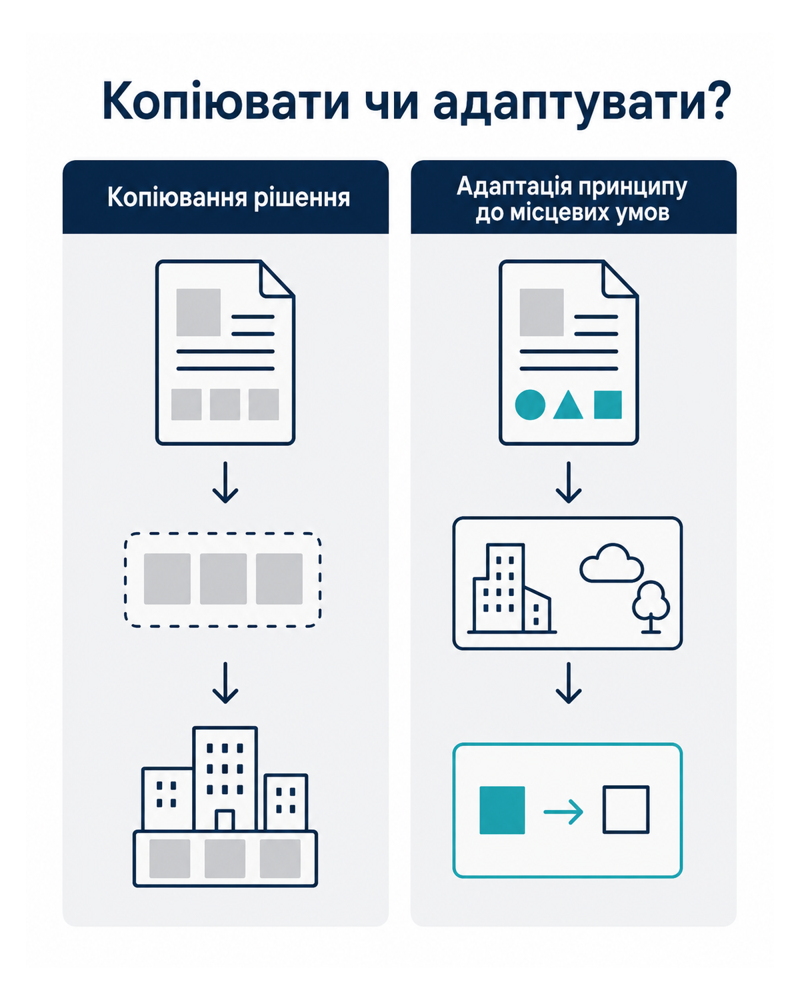

Очищує навчальний прогрес, самоперевірку і тест, але зберігає Карту адаптації.
🧭 Орієнтація
Глобальні тренди та уроки кліматично розумного урбанізму
Досвід EU Mission “Climate-Neutral and Smart Cities” та його адаптація для українських громад
Основний маршрут: 20–30 хвилин. Поглиблені матеріали та AI-підтримка — необов’язкові й не входять до цього часу.
🎯 Мета заняття
Сформувати управлінський спосіб перенесення досвіду: від підтвердженого прикладу — до умов застосування у власній громаді.
Навіщо Вам це заняття
Європейські міста вже випробовують нові моделі управління кліматичним переходом. Для української громади їхній досвід може скоротити шлях від загальної амбіції до конкретного рішення. Але механічне копіювання створює ризик: інше законодавство, інша інфраструктура, інший бюджет і воєнний контекст можуть зробити навіть успішний приклад непридатним.
Після цього заняття Ви зможете відділяти підтверджений факт від привабливої історії, бачити управлінську логіку Climate City Contract і обирати той елемент міжнародного досвіду, який реально можна перевірити у Вашій громаді.
✅ Чому Ви навчитесь
Пояснити, для чого створена EU Mission “Climate-Neutral and Smart Cities” та яку роль у ній відіграє Climate City Contract.
Відрізнити системний міський підхід від окремого технологічного проєкту.
Проаналізувати міжнародний кейс через проблему, управлінську модель, партнерства, фінансування та умови перенесення.
Визначити, що з досвіду іншого міста можна адаптувати, а що потребує додаткової перевірки.
Сформувати один реалістичний крок для своєї громади та підготувати контекст для наступного заняття.
🧩 Практичний результат
Карта адаптації міжнародного кліматичного досвіду для громади.
Це не план повного впровадження. Це коротка управлінська карта, яка допомагає обрати один елемент перевіреного міжнародного досвіду, оцінити умови його перенесення та сформулювати перший безпечний крок у власній громаді.

🗺️ Карта заняття
№
Блок
Активність
1
Орієнтація
Мета, результати й практичний результат
2
Теоретичний блок
EU Cities Mission і Climate City Contract
3
Теоретичний блок
Системний міський підхід
4
Практична логіка
Чотири кроки читання кейсу; повна пам’ятка — за бажанням
5
Корисний міжнародний досвід
Копенгаген, доказовий кейс Барселони та EU Cities Mission
6
Орієнтири для поглиблення
Необов’язково · офіційні джерела та практичний інструмент
7
Самоперевірка
Копіювати чи адаптувати?
8
Практичне завдання
Карта адаптації
9
AI-підтримка
Допомога під час виконання або перевірка результату
10
Підсумковий тест заняття
Шість питань
11
Завершення
Рефлексія та наступний крок
📘 Теоретичний блок
Що змінює EU Cities Mission
EU Mission “Climate-Neutral and Smart Cities” створена, щоб підтримати міста ЄС та асоційованих країн у переході до кліматичної нейтральності до 2030 року та зробити їх майданчиками для випробування рішень, які можуть використовувати інші міста до 2050 року.
Для міського голови важлива не сама належність до Mission, а її управлінська логіка: кліматична нейтральність розглядається як загальноміська трансформація, що об’єднує владу, мешканців, бізнес, інвесторів, регіональний і національний рівні.

🤝 Climate City Contract як управлінський інструмент
Climate City Contract — це не юридичний договір у звичайному значенні. Це спільно сформована міська рамка, яка поєднує зобов’язання, план дій та інвестиційний план. Її готують із залученням місцевих стейкголдерів і мешканців.
спільне бачення кліматичної нейтральності;
узгоджені пріоритети та відповідальні сторони;
план конкретних дій у ключових секторах;
інвестиційна логіка та потреби у фінансуванні;
механізм навчання, коригування і взаємодії.
🏘️ Приміряйте до своєї громади
Простими словами: Climate City Contract-подібна логіка потрібна не для того, щоб створити ще один документ. Вона допомагає домовитися, яку проблему громада вирішує, хто за що відповідає, які дії виконуються першими та де шукати ресурси.
✍️ Коротка перевірка
Назвіть одну кліматичну проблему громади, відповідального координатора та два підрозділи або партнери, які мають діяти разом.
📘 Теоретичний блок
Що таке кліматично розумний урбанізм
Кліматично розумний урбанізм поєднує скорочення викидів, адаптацію, якість життя, соціальну справедливість, дані та довгострокову вартість рішень. Він не зводиться до цифрових платформ або “зелених” об’єктів.
Ознака
Слабкий підхід
Системний підхід
Масштаб
Окремий проєкт
Портфель взаємопов’язаних дій
Управління
Один департамент
Спільна відповідальність і координація
Дані
Звітність після завершення
Дані для вибору, моніторингу й коригування
Фінансування
Пошук одного гранту
Інвестиційний план і різні джерела
Мешканці
Інформування після рішення
Співучасть у формуванні та реалізації
Перенесення досвіду
Копіювання рішення
Адаптація принципу до місцевих умов
🏘️ Як побачити системний підхід у своїй громаді
Оберіть один чинний проєкт громади й поставте п’ять коротких запитань:
Яку конкретну проблему він вирішує?
Які підрозділи та партнери мають діяти разом?
Які дані покажуть, чи є результат?
Що буде після завершення гранту або першого етапу?
Як мешканці можуть вплинути на рішення?
Якщо на більшість запитань немає відповіді, перед Вами, ймовірно, окремий проєкт, а не системна міська зміна.
🔎 Практична логіка
Як читати міжнародний кейс
Для основного маршруту достатньо чотирьох запитань. Вони ведуть від проблеми до малого перевірюваного кроку. Повну семикрокову пам’ятку можна відкрити за бажанням.
1. Яку проблему вирішували?
Простими словами: починайте не з красивого об’єкта, а з ризику або незручності для людей.
💡 Приклад
Проблема не в тому, що «у нас немає такого простору, як у Барселоні». Проблема в тому, що площа або зупинка перегрівається і нею складно користуватися у спеку.
2. Що саме зробили та який результат підтверджено?
Простими словами: знайдіть в офіційному джерелі конкретну дію і окремо перевірте, чи є дані про результат.
✅ Приклад
У Барселоні 11 початкових шкіл перетворили на кліматичні укриття за допомогою зелених, водних і будівельних рішень. Оцінювання зафіксувало менше відчуття спеки та краще самопочуття дітей, а також поліпшення тіні, озеленення і місць для сидіння.
Межа доказу: цей результат стосується оціненого шкільного проєкту Барселони. Він не гарантує такого самого ефекту в іншому типі простору або в іншій громаді.
3. Завдяки яким умовам це спрацювало?
Простими словами: подивіться на відповідальних, партнерства, дані, фінансування, правила та подальший догляд.
🤝 Приклад
У шкільному проєкті працювали міські служби, освітні установи, школи, дослідницькі й медичні партнери. Рішення обговорювали зі шкільними спільнотами, а вплив оцінювали до і після змін.
4. Що і як можна перевірити у своїй громаді?
Простими словами: переносіть принцип, а не готовий об’єкт, і починайте з малого кроку.
🚶 Умовний перший крок
Оберіть одну ділянку біля лікарні, школи або зупинки. Проведіть короткий спільний огляд, поговоріть із користувачами, зафіксуйте місця без тіні та визначте відповідального за малий пілот.
Критерій перевірки: команда підтвердила проблему, відповідального, місцеві обмеження і спосіб догляду за результатом.
📋 Показати повну семикрокову пам’ятку
Визначте проблему, яку місто намагалося вирішити.
Знайдіть підтверджену дію або управлінську модель.
З’ясуйте, хто був залучений і як розподілялася відповідальність.
Перевірте умови: дані, законодавство, фінансування, інфраструктуру та довіру.
Відокремте факт від інтерпретації.
Сформулюйте принцип, який можна перенести, а не об’єкт для копіювання.
Визначте малий перший крок і критерій перевірки.

Уроки для українського відновлення
Для українських громад міжнародний досвід має проходити через додатковий фільтр: воєнні ризики, пошкоджена інфраструктура, обмежені бюджети, кадровий дефіцит і потреба швидкого відновлення. Саме тому корисним є не “найефектніше” рішення, а те, що підсилює стійкість, знижує довгострокові витрати і може бути поетапно впроваджене.
🏥 Що це може означати вже зараз
Умовна ситуація: громада відновлює пошкоджену амбулаторію та прилеглу зупинку. Замість простого повернення до довоєнного стану команда перевіряє, чи можна одночасно зменшити перегрів, поліпшити безбар’єрний доступ, скоротити майбутні витрати на енергію та передбачити догляд за простором.
Малий крок: до затвердження проєкту зібрати медичних працівників, архітектора, комунальну службу та представників користувачів і перевірити одну спільну схему потреб та обмежень.
Важливо: це навчальний сценарій, а не опис конкретного проєкту SUN4Ukraine або конкретної української громади.
🏘️ Спробуйте застосувати
Оберіть один кейс і коротко визначте: проблему, підтверджену дію, місцеву умову та перший безпечний крок.
🧭 Перед тим як перейти до практики
Три міжнародні кейси простими словами
Кожен кейс нижче поділено на три частини. Це допомагає не плутати перевірений факт із власною ідеєю про те, як використати досвід у громаді.
🗝️ Як читати ці блоки
✅ Що точно відомо з джерела
Це інформація, яку можна перевірити в офіційному документі або на сайті організації.
Приклад: офіційний план справді охоплює транспорт, будівлі або роботу зі спекою.
💡 Як це може допомогти громаді
Це не готова відповідь, а можлива управлінська ідея, яку ще треба перевірити у місцевих умовах.
Приклад: поєднати довгу стратегію з коротким планом дій і відповідальними.
⚠️ Що не можна автоматично переносити
Це межа доказу: джерело не доводить, що той самий бюджет, строк, технологія або результат підійдуть Вашій громаді.
Приклад: успіх іншого міста не є прогнозом успіху для Вашого міста.
Як це працює для українських громад
SUN4Ukraine підтримує українські міста у поєднанні кліматичної нейтральності з відновленням. Програма передбачає експертну підтримку, розвиток спроможності та партнерства з Mission Cities. Для Заняття 04 головний урок полягає не у формальному приєднанні до ініціативи, а в тому, що українські громади можуть використовувати Climate City Contract-подібну логіку для узгодження відновлення, кліматичних цілей, партнерств і інвестицій.
🇩🇰 Копенгаген
✅ Що точно відомо з джерела
Місто прийняло Climate Strategy 2035 та Action Plan 2026–2028; план охоплює енергосистему, транспорт, будівлі та інші напрями.
💡 Як це може допомогти громаді
Можна взяти принцип: мати довший напрям руху, але працювати короткими планами з конкретними діями та відповідальними.
🏘️ Умовний приклад для громади
Громада визначає ціль на кілька років, а на найближчі 12 місяців обирає три реальні дії: перевірити дані, призначити відповідальних і підготувати один пілот.
⚠️ Що не можна автоматично переносити
Не можна робити висновок, що конкретні рішення, бюджет або строки Копенгагена підійдуть українському місту. Також джерело, використане в уроці, не дає підстав стверджувати, що попередня ціль 2025 була повністю досягнута.
🇪🇸 Барселона: кліматичні укриття у школах
Проблема → дія → результат → управлінський урок
📍 Конкретне місце і проблема
Одинадцять початкових шкіл Барселони, вразливих до спеки. Мета — зробити шкільні будівлі й подвір’я комфортнішими під час високих температур і відкрити частину просторів для громади.
🛠️ Що зробили
Додали зелені, водні та «сірі» рішення: ґрунт і рослинність замість частини бетону, тінь від пергол і навісів, дерева, водні точки та зміни в будівлях. Рішення формували за участю шкільних спільнот.
📊 Що підтверджено результатами
Офіційне оцінювання з порівнянням «до і після» зафіксувало зменшення відчуття спеки та поліпшення самопочуття дітей у подвір’ях і частині внутрішніх зон. Також покращилися тінь, озеленення, місця для сидіння та різноманітність можливостей для гри.
🏘️ Що може взяти українська громада
Не копіювати набір об’єктів, а використати принцип: обрати вразливий публічний простір, поєднати кілька типів рішень, залучити користувачів і заздалегідь визначити, як виміряти комфорт та використання простору.
⚠️ Межа доказу
Джерела не доводять, що такий самий набір заходів, бюджет або результат буде придатним для української лікарні, площі чи школи. Це потрібно перевіряти за місцевим кліматом, станом будівель, безпекою, ресурсами та можливостями догляду.
Mission використовує Climate City Contracts, співтворення, міжсекторальні рішення та інвестиційні плани.
💡 Як це може допомогти громаді
Можна використати послідовність мислення: спільне зобов’язання → узгоджені дії → потреби у фінансуванні → навчання та коригування.
🏘️ Умовний приклад для громади
Замість списку з десяти не пов’язаних проєктів громада обирає одну проблему, визначає пакет дій, відповідальних, партнерів, ресурси та дату спільного перегляду результатів.
⚠️ Що не можна автоматично переносити
Mission Label або формальна участь у програмі не є передумовою для використання окремих принципів. Водночас використання принципу не означає, що громада отримала статус, схвалення чи фінансування Mission.
✍️ Маленьке завдання
Оберіть один із трьох кейсів. Одним реченням запишіть, який принцип Ви можете використати та яку місцеву умову потрібно перевірити першою.
🔎 Необов’язково · Матеріали для поглиблення
Орієнтири для поглиблення
EU Mission: Climate-Neutral and Smart Cities
Офіційна організація
European Commission
Для чого використовувати
Зрозуміти мету Mission, її загальноміську управлінську логіку та роль Climate City Contracts.
Що не можна автоматично вважати доведеним (межа доказу)
Не використовувати поточні числові статуси Mission як твердження для учасника або доказ придатності для громади.
Коли громада хоче перейти від окремої ідеї до послідовного процесу: оцінити ризики, обрати заходи, підготувати план, знайти ресурси та відстежувати результат.
Як використати для прикладу зі спекою
Почніть із кроків оцінювання ризику і вразливості, а потім порівняйте варіанти адаптації. Не потрібно проходити весь інструмент під час заняття.
Межа застосування
Це навігаційний інструмент, а не готовий проєкт і не заміна місцевим технічним, правовим чи безпековим оцінкам.
Визначте, чи демонструє кожне твердження безпечну адаптацію міжнародного досвіду. Самоперевірка не оцінюється і не блокує перехід до практики.
✍️ Практичне завдання
Карта адаптації міжнародного кліматичного досвіду для громади
Ця карта стане частиною Вашого Портфеля мера.
Оберіть один міжнародний кейс або принцип, який стосується кліматичної дії Вашої громади. Заповніть Карту адаптації. Ваше завдання — не довести, що рішення вже підходить, а сформулювати, що саме потрібно перевірити перед першим кроком.
Карта адаптації міжнародного кліматичного досвіду для громади
Портфель мера
Цей PDF можна за Вашим рішенням передати AI-помічнику для аналізу, уточнення або вдосконалення запропонованого рішення. Не додавайте персональні чи конфіденційні дані.
🤖 Необов’язково · AI-підтримка
AI-підтримка та контекст для наступного заняття
AI-підтримка може допомогти доопрацювати Карту адаптації. Цей етап необов’язковий: Ви можете перейти далі без використання AI.
👁️ Попередній перегляд запиту
Заповніть Карту адаптації та оберіть режим підтримки.
Ваші дані залишаються у цьому браузері, доки Ви самі не скопіюєте їх або не вставите до зовнішнього сервісу. Не вводьте персональні чи конфіденційні дані. Перевіряйте відповіді AI: вони не замінюють відповідальне рішення та професійний розгляд команди громади.
До контексту входять: Громада; виклик; принцип; умови; перший крок; питання про можливість NBS.
Заповніть відповідні поля Карти адаптації.
✅ Підсумковий тест заняття
Перевірте управлінську логіку
Оберіть одну правильну відповідь у кожному питанні. Неправильні варіанти можуть звучати правдоподібно, тому звертайте увагу не лише на терміни, а й на управлінську логіку.
✅ Завершення
Головна думка заняття
Міжнародний досвід корисний не тоді, коли громада копіює чуже рішення, а тоді, коли розуміє його логіку, умови успіху та адаптує перший крок до власного контексту.
🪞 Рефлексія
Який міжнародний приклад найбільше змінив Ваше уявлення про кліматичну дію?
Яку умову у Вашій громаді Ви найчастіше недооцінюєте під час перенесення чужого досвіду?
Що Ви готові перевірити разом із командою протягом наступних двох тижнів?
🚀 Що варто зробити вже зараз
Оберіть один підтверджений принцип із заняття та домовтеся з відповідальним підрозділом про коротку перевірку трьох речей: локальна проблема, необхідні умови та можливий перший пілот.
➡️ Перехід до наступного заняття
У наступному занятті Ви перейдете до природоорієнтованих рішень. Використайте свою Карту адаптації, щоб перевірити: чи може природа бути частиною відповіді на обраний локальний виклик — і які екосистемні, соціальні та управлінські умови для цього потрібні.